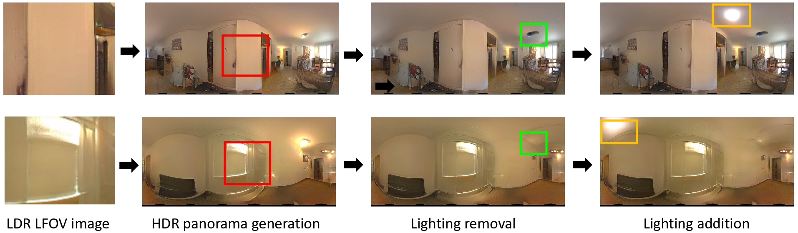

프로젝트 소개¶
StyleLight: 조명 추정 및 편집을 위한 HDR 파노라마 생성¶

원본 StyleLight 논문 (ECCV 2022)¶
초록: 본 논문은 LDR(Low-Dynamic-Range) 카메라로 촬영된 단일 제한된 시야각(FOV) 이미지로부터 HDR(High-Dynamic-Range) 실내 파노라마 조명을 생성하는 새로운 조명 추정 및 편집 프레임워크를 제안합니다.
저자: Guangcong Wang, Yinuo Yang, Chen Change Loy, Ziwei Liu 소속: S-Lab, Nanyang Technological University
현재 프로젝트: 물리적 정합성 기반 HDR 파노라마 생성¶
본 프로젝트는 StyleLight 아키텍처를 기반으로, 23mm 렌즈(약 63° 화각)의 단일 NFoV HDR 이미지로부터 물리적으로 정확한 180° 반구형 HDR 파노라마를 생성합니다.
핵심 목표¶
| 목표 | 설명 |
|---|---|
| DGP 정합성 | 주광 눈부심 확률(DGP) 계산에 필요한 절대 휘도(cd/m²) 정합성 확보 |
| 전이 구간 복원 | 300~1000 cd/m² 구간의 정밀한 휘도 복원 |
| 수직 조도 정확도 | Ev 오차율 10% 이내 달성 |
주요 기술¶
- 2-Stage 학습: S2R-HDR(구조) → Laval(물리 보정)
- S2R-Adapter: 2-브랜치 도메인 적응 구조
- DTAM: 이중 임계값 적응형 마스킹
- Full FP32: 높은 동적 범위를 위한 정밀도 유지
시스템 요구사항¶
필수 조건¶
- Linux, Windows, 또는 macOS
- Python 3.8+
- NVIDIA GPU + CUDA 12.1
- PyTorch 2.1.0+
- OpenCV
권장 하드웨어¶
- NVIDIA RTX 5090 (32GB+ VRAM) - Full FP32 학습용
- 또는 RTX 4090 (24GB) - Mixed Precision 학습용
빠른 시작¶
1. 환경 설정¶
conda create -n StyleLight_conda python=3.8
conda activate StyleLight_conda
# PyTorch 설치 (CUDA 12.1)
conda install pytorch==2.1.0 torchvision==0.16.0 pytorch-cuda=12.1 -c pytorch -c nvidia
# 필수 패키지
pip install lpips wandb matplotlib dlib imageio einops
pip install imageio-ffmpeg ninja opencv-python OpenEXR
자세한 환경 설정은 환경 설정 가이드를 참조하세요.
2. 학습 실행¶
인용¶
연구에 도움이 되었다면 원본 StyleLight 논문을 인용해 주세요:
@inproceedings{wang2022stylelight,
author = {Wang, Guangcong and Yang, Yinuo and Loy, Chen Change and Liu, Ziwei},
title = {StyleLight: HDR Panorama Generation for Lighting Estimation and Editing},
booktitle = {European Conference on Computer Vision (ECCV)},
year = {2022},
}
관련 링크¶
- Text2Light: Zero-Shot Text-Driven HDR Panorama Generation
- SceneDreamer: Unbounded 3D Scene Generation
- Gardner et al. Learning to Predict Indoor Illumination
감사의 글¶
이 코드는 StyleGAN2-ada-pytorch, PTI, skylibs 코드베이스를 기반으로 합니다.